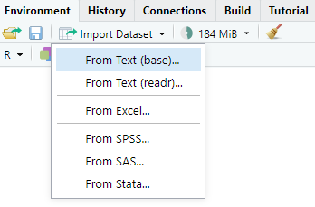
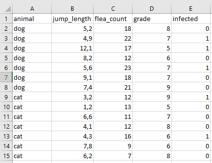

9 Daten einlesen
Gängige Fehler beim Einlesen von Dateien in R
- der Pfad zur Datei ist falsch (Kapitel 9.3)
- in der Datei sind komische Zeichen, wie Umlaute und Co. (Kapitel 9.4)
- in der Datei sind Leerzeichen in den Spaltennamen (Kapitel 9.5)
9.1 Genutzte R Pakete für das Kapitel
Wir wollen folgende R Pakete in diesem Kapitel nutzen.
pacman::p_load(tidyverse, magrittr, janitor)Am Ende des Kapitels findest du nochmal den gesamten R Code in einem Rutsch zum selber durchführen oder aber kopieren.
9.2 Importieren mit RStudio
Wir können das RStudio nutzen um Daten mit Point-and-Klick rein zuladen und dann den Code wieder in den Editor kopieren. Im Prinzip ist dieser Weg der einfachste um einmal zu sehen, wie ein pfad funktioniert und der Code lautet. Später benötigt man diese ‘Krücke’ nicht mehr. Wir nutzen dann direkt den Pfad zu der Datei. Abbildung 9.1 zeigt einen Ausschnitt, wo wir im RStudio die Import Dataset Funktionalität finden.

Du findest auf YouTube Einführung in R - Teil 21.0 - Daten importieren mit RStudio - Point and Klick als Video. Point and Klick ist als Video einfacher nachzuvollziehen als Screenshots in einem Fließtext.
9.3 Importieren per Pfad
In Abbildung 9.2 können wir sehen wie wir den Pfad zu unserer Excel Datei flea_dog_cat.xlsx finden. Natürlich kannst du den Pfad auch anders herausfinden bzw. aus dem Explorer oder Finder kopieren.

Nachdem wir den Pfad gefunden haben, können wir den Pfad in die Funktion read_excel() kopieren und die Datei in das Objekt data_tbl einlesen. Ja, es wird nichts in der R Console ausgegeben, da sich die Daten jetzt in dem Object data_tbl befinden.
## Ganzer Pfad zur Datei flea_dog_cat.xlsx
data_tbl <- read_excel("data/flea_dog_cat.xlsx")\ in Windows und / in R
Achte einmal auf den Slash im Pfad in R und einem im Pfsd in Windows. Einmal ist es der Slash \ im Dateipfad und einmal der Backslash /. Das ist sehr ärgerlich, aber dieses Problem geht zurück in die 80’ziger. Bill hat entschieden für sein Windows / zu nutzen und Steve (und Unix) eben /. Und mit dieser Entscheidung müssen wir jetzt leben…
9.4 Auf ein englisches Wort in Dateien
Ein großes Problem in Datein sind Umlaute (ä,ö,ü) oder aber andere (Sonder)zeichen (ß, ?, oder #). Als dies sollte vermieden werden. Eine gute Datei für R beinhaltet nur ganze Wörter, Zahlen oder aber leere Felder. Ein leeres Feld ist ein fehlender Wert. Abbildung 9.3 zeigt eine gute Exceldatentablle. Wir schreiben jump_length mit Unterstrich um den Namen besser zu lesen zu können. Sonst ist auch alles in Englisch geschrieben. Wir vermeiden durch die neglische Schreibweise aus versehen einen Umlaut oder anderweitig problematische Zeichen zu verwenden. Später können wir alles noch für Abbildungen anpassen.

9.5 Spaltennamen in der (Excel)-Datei
Die Funktion clean_names() aus dem R Paket janitor erlaubt es die Spaltennamen einer eingelesenen Datei in eine für R gute Form zu bringen.
- Keine Leerzeichen in den Spaltennamen.
- Alle Spaltennamen sind klein geschrieben.
data_tbl %>%
clean_names()# A tibble: 14 × 5
animal jump_length flea_count grade infected
<chr> <dbl> <dbl> <dbl> <dbl>
1 dog 5.7 18 8 0
2 dog 8.9 22 7 1
3 dog 11.8 17 5 1
4 dog 8.2 12 6 0
5 dog 5.6 23 7 1
6 dog 9.1 18 7 0
7 dog 7.6 21 9 0
8 cat 3.2 12 9 1
9 cat 2.2 13 5 0
10 cat 5.4 11 7 0
11 cat 4.1 12 8 0
12 cat 4.3 16 6 1
13 cat 7.9 9 6 0
14 cat 6.1 7 8 09.5.1 Datenbeispiel
9.6 Wide format
| dog | cat |
|---|---|
| 5.2 | 10.1 |
| 4.9 | 9.4 |
| 12.1 | 11.8 |
| 8.2 | 6.7 |
| 5.6 | 8.2 |
| 9.1 | 9.1 |
| 7.4 | 7.1 |
9.7 Long format
jump_tbl <- tibble(dog = c(5.2, 4.9, 12.1, 8.2, 5.6, 9.1, 7.4),
cat = c(10.1, 9.4, 11.8, 6.7, 8.2, 9.1, 7.1)) %>%
gather(key = "animal", value = "jump_length")
jump_tbl# A tibble: 14 × 2
animal jump_length
<chr> <dbl>
1 dog 5.2
2 dog 4.9
3 dog 12.1
4 dog 8.2
5 dog 5.6
6 dog 9.1
7 dog 7.4
8 cat 10.1
9 cat 9.4
10 cat 11.8
11 cat 6.7
12 cat 8.2
13 cat 9.1
14 cat 7.1| treatment | block | rep_1 | rep_2 | rep_3 | rep_4 | rep_5 | rep_6 |
|---|---|---|---|---|---|---|---|
| A | 1 | 11.84 | 17.53 | 17.87 | 18.80 | 17.78 | 16.03 |
| A | 2 | 16.03 | 12.81 | 21.68 | 17.07 | 16.59 | 17.71 |
| A | 3 | 15.52 | 17.14 | 16.88 | 15.98 | 17.56 | 18.44 |
| A | 4 | 16.04 | 12.58 | 15.22 | 18.27 | 16.30 | 17.21 |
| B | 1 | 14.20 | 15.88 | 16.77 | 16.38 | 15.20 | 18.62 |
| B | 2 | 15.62 | 12.80 | 13.68 | 19.50 | 19.46 | 19.16 |
| B | 3 | 16.55 | 13.46 | 13.86 | 18.01 | 20.61 | 19.57 |
| B | 4 | 14.61 | 12.35 | 16.31 | 15.67 | 16.87 | 18.10 |
| C | 1 | 17.28 | 11.94 | 14.95 | 16.42 | 17.75 | 19.76 |
| C | 2 | 12.28 | 16.39 | 13.82 | 17.43 | 17.30 | 17.17 |
| C | 3 | 16.37 | 17.39 | 17.21 | 17.78 | 16.38 | 20.18 |
| C | 4 | 12.49 | 12.89 | 16.26 | 19.37 | 14.60 | 18.51 |
| D | 1 | 16.21 | 13.14 | 14.96 | 17.85 | 15.38 | 16.50 |
| D | 2 | 15.71 | 14.83 | 21.06 | 14.50 | 15.78 | 17.24 |
| D | 3 | 14.35 | 14.35 | 14.33 | 15.80 | 17.95 | 18.19 |
| D | 4 | 15.26 | 17.52 | 13.81 | 17.35 | 14.25 | 17.61 |
data_tbl %>%
gather(rep, value, rep_1:rep_6) %>%
arrange(treatment, block)# A tibble: 96 × 4
treatment block rep value
<fct> <int> <chr> <dbl>
1 A 1 rep_1 11.8
2 A 1 rep_2 17.5
3 A 1 rep_3 17.9
4 A 1 rep_4 18.8
5 A 1 rep_5 17.8
6 A 1 rep_6 16.0
7 A 2 rep_1 16.0
8 A 2 rep_2 12.8
9 A 2 rep_3 21.7
10 A 2 rep_4 17.1
# … with 86 more rows